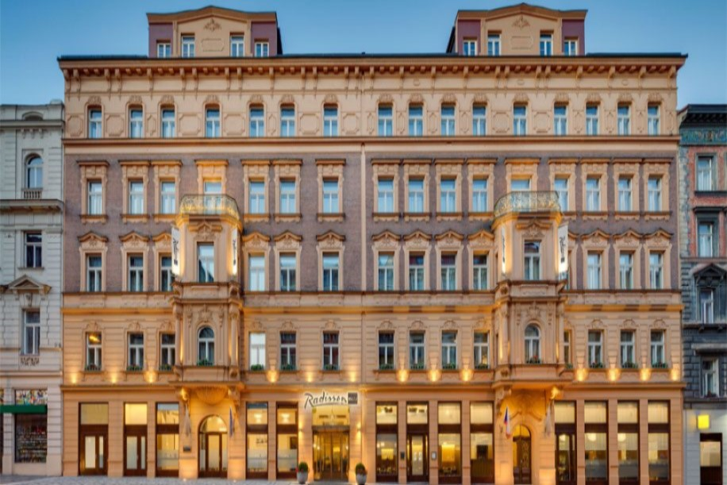
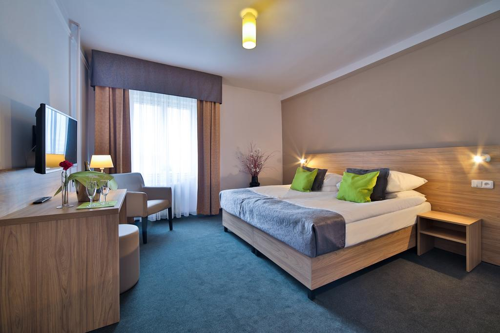
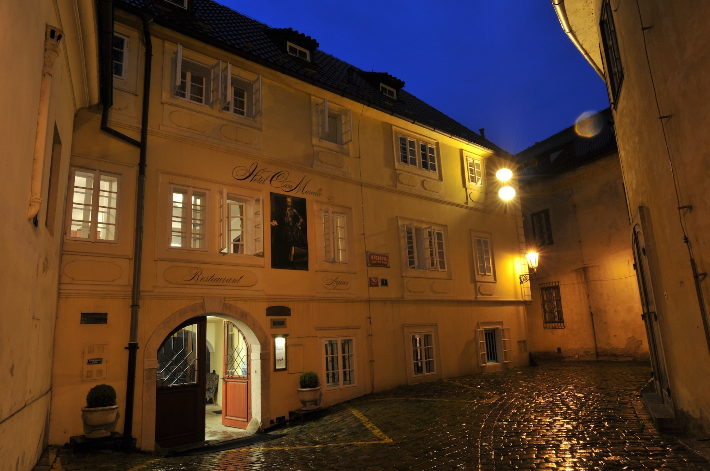
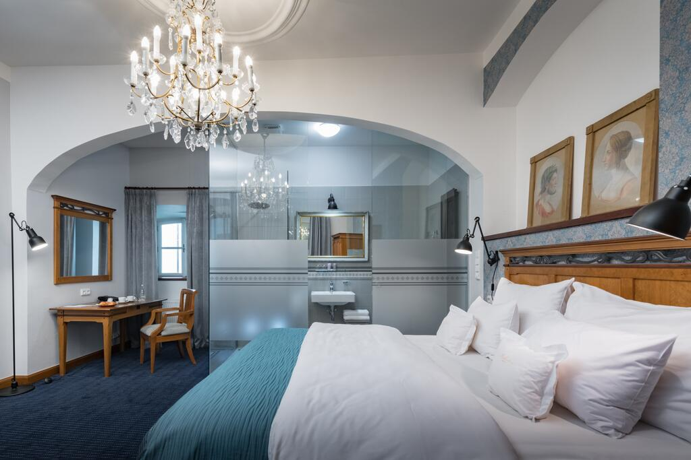
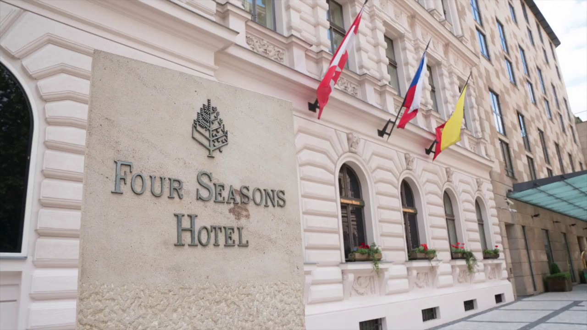
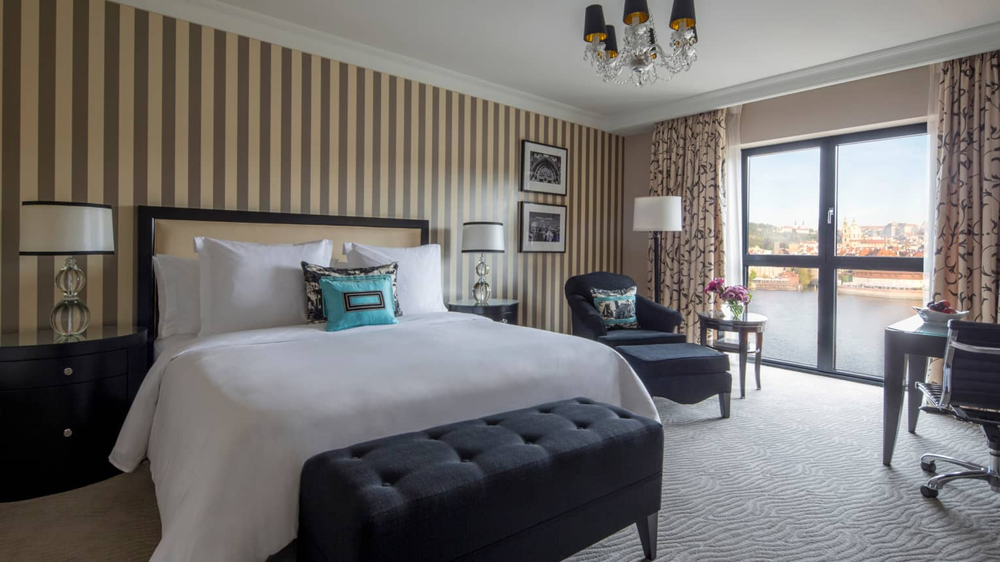
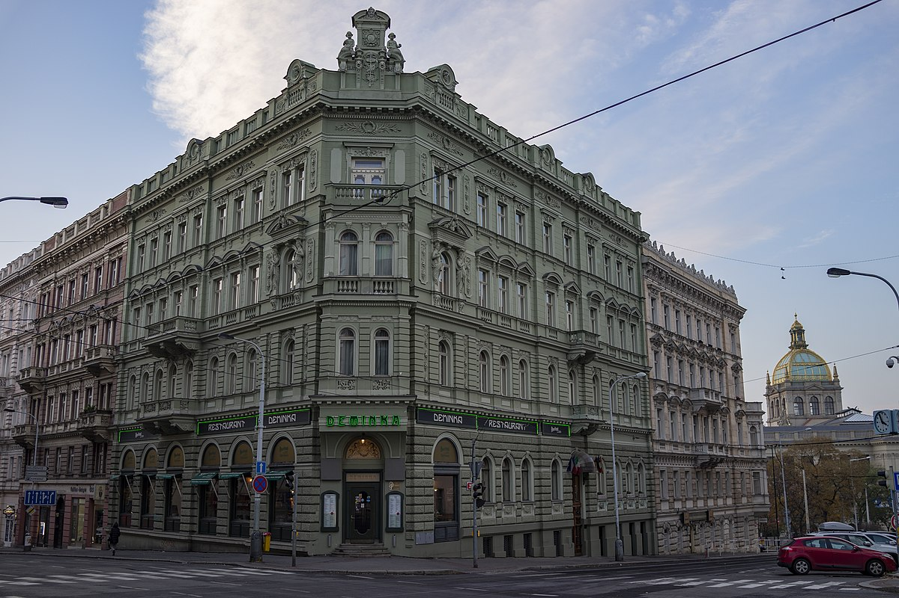
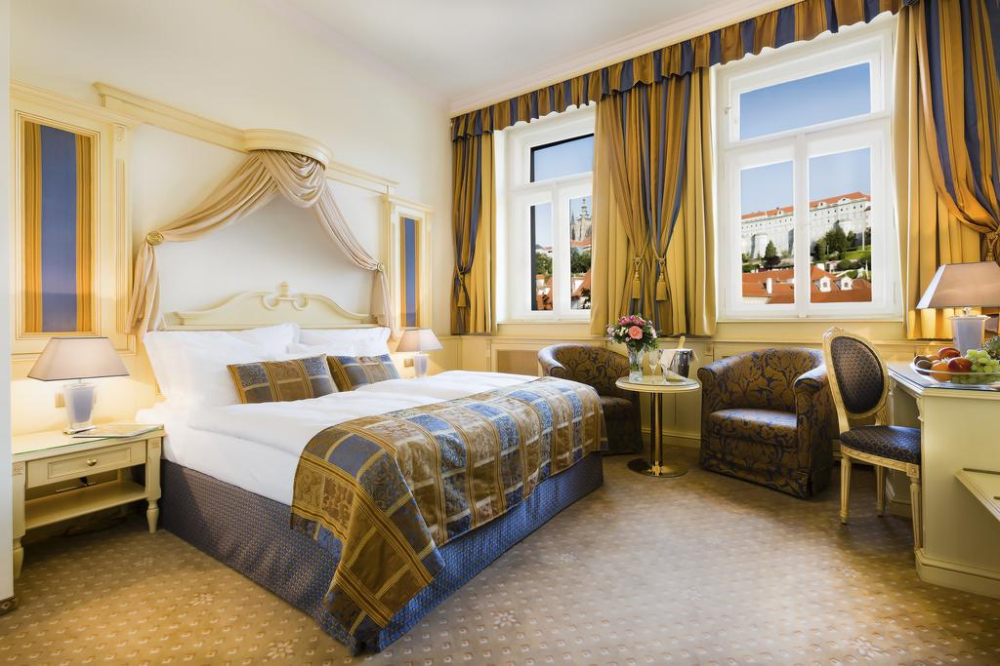

Μερικές από τις μεγαλύτερες διεθνείς αλυσίδες ξενοδοχείων βρίσκονται στην Πράγα.
Εάν, ωστόσο προτιμάτε την γοητεία από την άνεση, διαλέξτε κάποιο μικρό ξενοδοχείο της Μάλα Στράνα ή του Στάρε Μιέστο στην καρδιά του ιστορικού κέντρου ή στην ήσυχη συνοικία Χράντσανι.
Μπορείτε, φυσικά, και να νοικιάσετε κάποιο διαμέρισμα μέσω της www.airbnb.com!
Για τους νέους:
Από το τέλος Ιουνίου μέχρι τον Σεπτέμβριο, οι κατοικίες των φοιτητών του πανεπιστημίου Charles λειτουργούν ως ξενώνες για τους νέους (Πληροφορίες και κρατήσεις στο κεντρικό γραφείο του πανεπιστημίου).
Η ταξιδιωτική μας εταιρεία συνεργάζεται με τα ακόλουθα ξενοδοχεία:
|  |  |
Αυτό το μικρό πανδοχείο του 17ου αι . διαμορφώθηκε σε ξενοδοχείο το
1845. Τα ασημί σκέπαστρα της εισόδου , που υποδέχονται χαρούμενα
τους επισκέπτες , έρχονται σε αντίθεση με τη σκοτεινή ξύλινη επένδυση
στο εσωτερικό . Τα διαφόρων μεγεθών δωμάτια είναι στολισμένα με
πολύχρωμα έπιπλα . Οι λάτρεις του παιχνιδιού θα εκτιμήσουν τα τρία
τραπέζια μπιλιάρδου στη μεγάλη αίθουσα του μπαρ.
Δείτε εδώ τον επίσημο ιστότοπο του ξενοδοχείου.
|  |  |
Γοητευτικό και πολύ ήσυχο ξενοδοχείο . Οι σκάλες , οι καμάρες και οι ελικοειδείς διάδρομοι θυμίζουν ότι ανήκε στο μοναστήρι της Αγίας Αγνής ( 13ος αι . ) . Δωμάτια λειτουργικά και άνετα , διάδρομοι και κοινόχρηστοι χώροι διακοσμημένοι με αντίκες.
Δείτε εδώ τον επίσημο ιστότοπο του ξενοδοχείου.
|  |  |
Άνοιξε τις πόρτες του το Φεβρουάριο του 2001. Καταλαμβάνει ένα νεόκτιστο κτίριο και συγχρόνως το αναστηλωμένο τμήμα μιας παλαιάς μονής . Η τοποθεσία του πάνω στον Μολδάβα προσφέρει μία από τις ωραιότερες πανοραμικές θέες της πόλης . Τα διακοσμημένα σε απαλούς τόνους δωμάτιά του είναι τεράστια και διαθέτουν κομψά μπάνια.
Δείτε εδώ τον επίσημο ιστότοπο του ξενοδοχείου.
|  |  |
Παλάτι σε ρυθμό βιεννέζικης Αποσκίρτησης ( 1906 ) με γοητευτική
αρχιτεκτονική . Η είσοδός του , φωτισμένη από πελώριους γυάλινους
πολυελαίους , είναι πραγματικά εντυπωσιακή . Οι διάδρομοι με την ξύλινη
επένδυση οδηγούν στα πλούσια επιπλωμένα ευρύχωρα δωμάτια με τα ψηλά
ταβάνια και τα μεγάλα παράθυρα . Η διακόσμηση από φυτά και υφάσματα
συνδυάζει αρμονικά τους τόνους του μπορντό , του λαδί και της ώχρας.
Δείτε εδώ τον επίσημο ιστότοπο του ξενοδοχείου.
Ανταλλακτήρια συναλλάγματος στην Πράγα
Στο κέντρο της πόλης υπάρχουν πάρα πολλά ανταλλακτήρια και μερικά από αυτά είναι ανοιχτά 24 ώρες. Η προμήθειά τους διαφέρει από 0% έως και 30 %!, παρά την αρχική εντύπωση, πως κανένα δεν χρεώνει προμήθεια, μιας και διαφημίζουν με τεράστια γράμματα "0% commisson". Πάντα χρειάζεται να διαβάσει κανείς τα μικρά γράμματα.
Αλλάζοντας στο αεροδρόμιο της Πράγας θα χάσετε επίσης περίπου 20-30% από την επίσημη ισοτιμία, ανάλογα με το ποσό, που θα αλλάξετε.
Αλλάζοντας στο αεροδρόμιο της Αθήνας ή Θεσσαλονίκης θα χάσετε περίπου 10-12% από την επίσημη ισοτιμία, ανάλογα με το ποσό, που θα αλλάξετε.
Τράπεζες και πιστωτικές κάρτες στην Πράγα
Οι περισσότερες τράπεζες είναι ανοιχτές από Δευτέρα έως Παρασκευή, 8 π.μ. - 4 μ.μ. Η προμήθεια τους είναι συνήθως 1-2%.
Πιστωτικές κάρτες γίνονται δεκτές σχεδόν σε όλα τα εστιατόρια και καταστήματα.
Συνάλλαγμα στα ξενοδοχεία της Πράγας
Συνάλλαγμα μπορείτε να κάνετε και στα περισσότερα ξενοδοχεία της Πράγας. Η προμήθεια τους συνήθως κυμαίνεται από 0% έως 5%.
| Τρέχουσες Ισοτιμίες | |
|---|---|
| Από Ευρώ σε Τσέχικη Κορώνα | Από Τσέχικη Κορώνα σε Ευρώ |
| 1 € = 26,39 CZK | 1 CZK = 0,038 € |